00:00:00
Visitor Counter:
Discover the latest washing machines at Liberty Electronics — from user-friendly models to high-end, feature-packed machines, all offering exceptional performance, design, and value. Compare features and find the perfect washing machine to meet your laundry needs, all in one place.
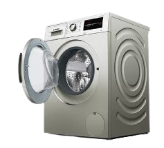
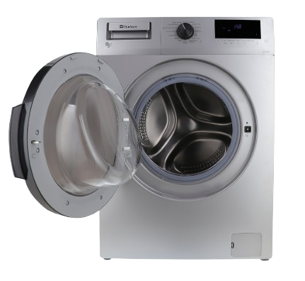
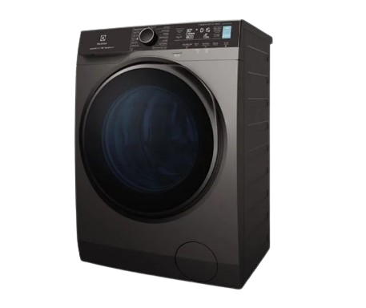
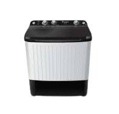
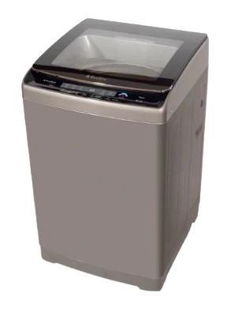
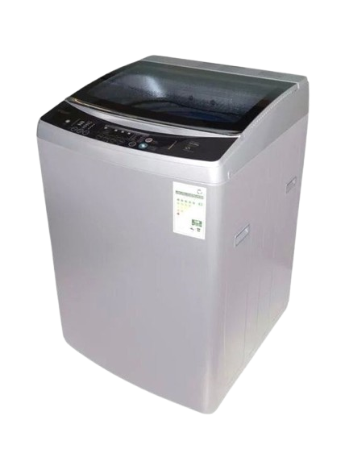
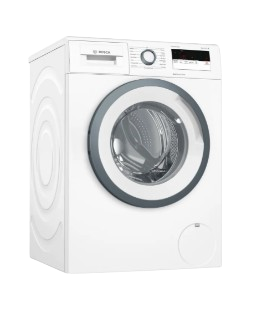
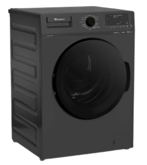
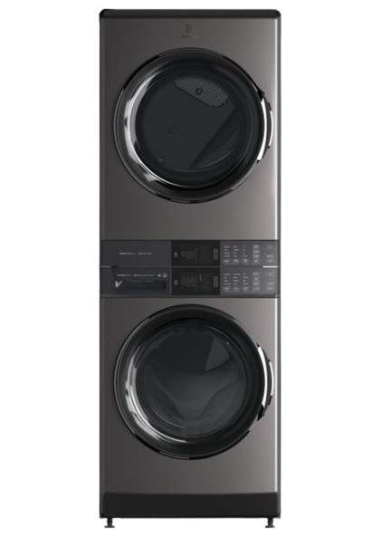
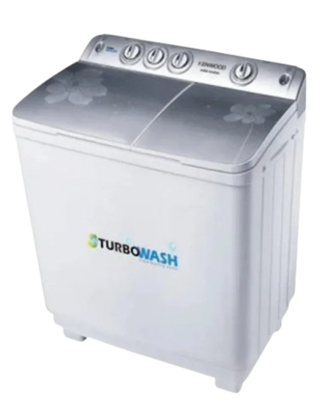
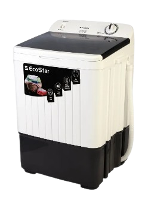
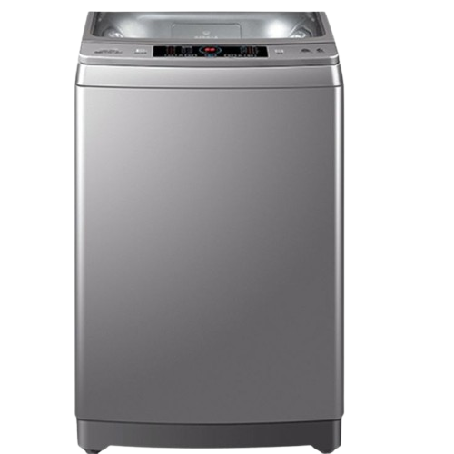
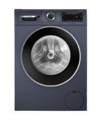
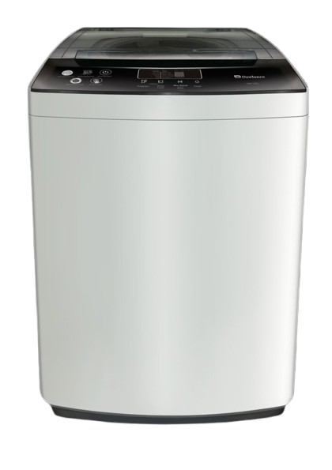
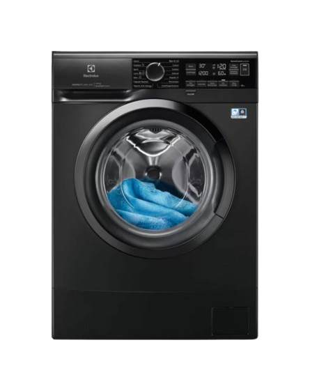
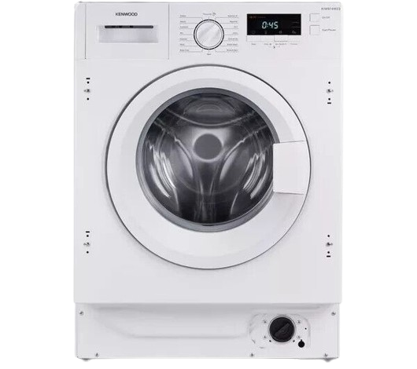
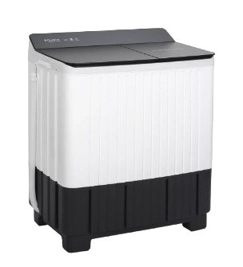
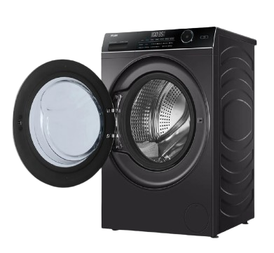